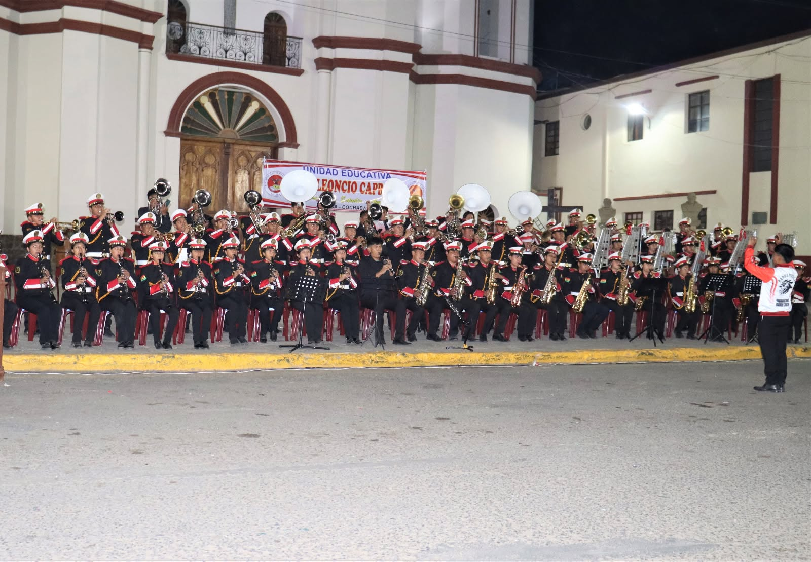

UNIDAD EDUCATIVA
José Leoncio
Capriles
Sacaba, Cochabamba — Bolivia
Una comunidad que aprende, crece y comparte. Bienvenidos a un espacio donde la educación, el talento y los valores nos unen.
Conocer nuestro plantel
NUESTRA HISTORIA
Una historia que nos une a Sacaba.
Educación, memoria y comunidad.
La Unidad Educativa José Leoncio Capriles forma parte de la vida educativa de Sacaba, Cochabamba. El programa conmemorativo de sus Bodas de Oro recoge el período 1973–2023 como referencia de su trayectoria institucional: una memoria compartida por docentes, estudiantes, familias y exalumnos. [1]
Entre los hitos documentados de su crecimiento se encuentra la entrega de una nueva infraestructura en 2016. La nota publicada por el diario Opinión describe un edificio de tres plantas, con nueve aulas, laboratorios de química y salas de computación. Esta ampliación incorporó espacios destinados al aprendizaje y a las actividades académicas del colegio. [2]
El programa de las Bodas de Oro de 2023 contempló actividades cívicas, religiosas, artísticas y deportivas durante marzo, además de una jornada dedicada al exalumno. En su organización figuraban la dirección, el plantel docente y administrativo, los estudiantes y los padres de familia, reflejando el carácter comunitario de la conmemoración. [1]
Hoy, la presentación de su plantel docente, su banda estudiantil y sus escoltas permite conocer distintas expresiones de esa comunidad. La enseñanza, la música y la participación institucional forman parte de la identidad que el colegio comparte desde Sacaba.
VIDA INSTITUCIONAL
Una comunidad, muchas formas de crecer.
Conoce a quienes dan vida
a nuestra institución.